在上一节，我们观察了各层的激活值分布，并从中了解到如果设定了合适的权重初始值，则各层的激活值分布会有适当的广度，从而可以顺利地进行学习。那么，为了使各层拥有适当的广度，“强制性”地调整激活值的分布会怎样呢？实际上，Batch Normalization[11] 方法就是基于这个想法而产生的。
Batch Normalization（下文简称 Batch Norm）是 2015 年提出的方法。Batch Norm 虽然是一个问世不久的新方法，但已经被很多研究人员和技术人员广泛使用。实际上，看一下机器学习竞赛的结果，就会发现很多通过使用这个方法而获得优异结果的例子。
为什么 Batch Norm 这么惹人注目呢？因为 Batch Norm 有以下优点。
- 可以使学习快速进行（可以增大学习率）。
- 不那么依赖初始值（对于初始值不用那么神经质）。
- 抑制过拟合（降低 Dropout 等的必要性）。
考虑到深度学习要花费很多时间，第一个优点令人非常开心。另外，后两点也可以帮我们消除深度学习的学习中的很多烦恼。
如前所述，Batch Norm 的思路是调整各层的激活值分布使其拥有适当的广度。为此，要向神经网络中插入对数据分布进行正规化的层，即 Batch Normalization 层（下文简称 Batch Norm 层），如图 6-16 所示。
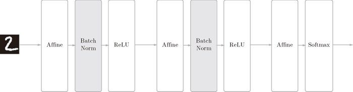
图 6-16 使用了 Batch Normalization 的神经网络的例子（Batch Norm 层的背景为灰色）
Batch Norm，顾名思义，以进行学习时的 mini-batch 为单位，按 mini-batch 进行正规化。具体而言，就是进行使数据分布的均值为 0、方差为 1 的正规化。用数学式表示的话，如下所示。
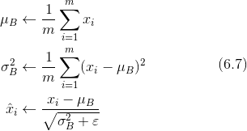
这里对 mini-batch 的 m 个输入数据的集合 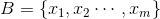 求均值 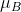 和方差 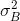。然后，对输入数据进行均值为 0、方差为 1（合适的分布）的正规化。式（6.7）中的 ε 是一个微小值（比如，10e-7 等），它是为了防止出现除以 0 的情况。
式（6.7）所做的是将 mini-batch 的输入数据 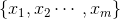 变换为均值为 0、方差为 1 的数据 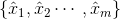，非常简单。通过将这个处理插入到激活函数的前面（或者后面）5，可以减小数据分布的偏向。
5文献 [11]、文献 [12] 等中有讨论（做过实验）应该把 Batch Normalization 插入到激活函数的前面还是后面。
接着，Batch Norm 层会对正规化后的数据进行缩放和平移的变换，用数学式可以如下表示。
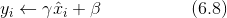
这里，γ 和 β 是参数。一开始 γ = 1，β = 0，然后再通过学习调整到合适的值。
上面就是 Batch Norm 的算法。这个算法是神经网络上的正向传播。如果使用第 5 章介绍的计算图，Batch Norm 可以表示为图 6-17。
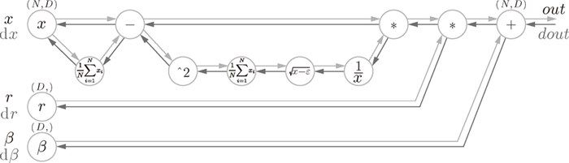
图 6-17 Batch Normalization 的计算图（引用自文献 [13]）
Batch Norm 的反向传播的推导有些复杂，这里我们不进行介绍。不过如果使用图 6-17 的计算图来思考的话，Batch Norm 的反向传播或许也能比较轻松地推导出来。Frederik Kratzert 的博客“Understanding the backward pass through Batch Normalization Layer”[13] 里有详细说明，感兴趣的读者可以参考一下。
现在我们使用 Batch Norm 层进行实验。首先，使用 MNIST 数据集，观察使用Batch Norm 层和不使用 Batch Norm 层时学习的过程会如何变化（源代码在 ch06/batch_norm_test.py 中），结果如图 6-18 所示。
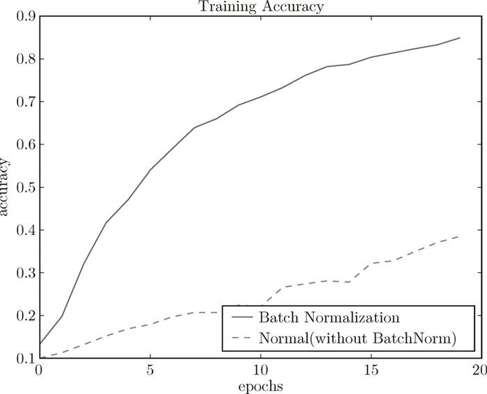
图 6-18 基于 Batch Norm 的效果：使用 Batch Norm 后，学习进行得更快了
从图 6-18 的结果可知，使用 Batch Norm 后，学习进行得更快了。接着，给予不同的初始值尺度，观察学习的过程如何变化。图 6-19 是权重初始值的标准差为各种不同的值时的学习过程图。
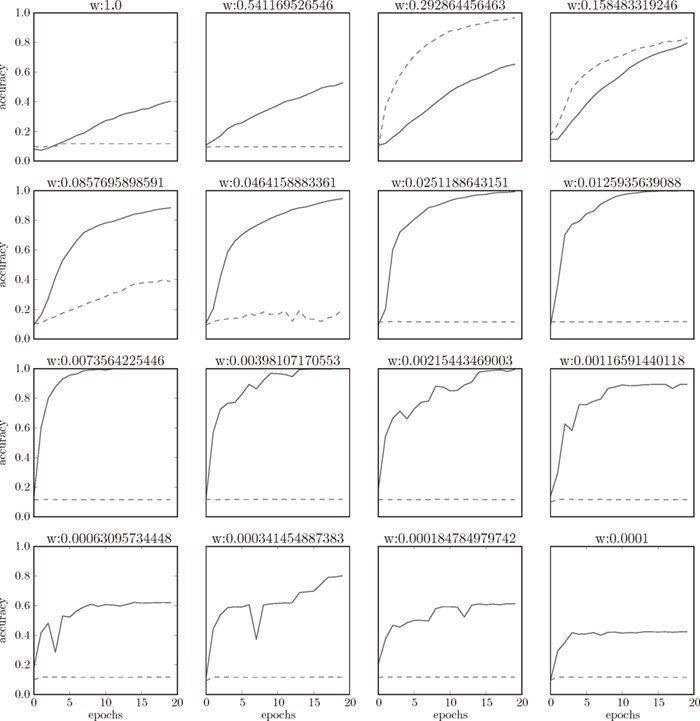
图 6-19 图中的实线是使用了 Batch Norm 时的结果，虚线是没有使用 Batch Norm 时的结果：图的标题处标明了权重初始值的标准差
我们发现，几乎所有的情况下都是使用 Batch Norm 时学习进行得更快。同时也可以发现，实际上，在不使用 Batch Norm 的情况下，如果不赋予一个尺度好的初始值，学习将完全无法进行。
综上，通过使用 Batch Norm，可以推动学习的进行。并且，对权重初始值变得健壮（“对初始值健壮”表示不那么依赖初始值）。Batch Norm 具备了如此优良的性质，一定能应用在更多场合中。